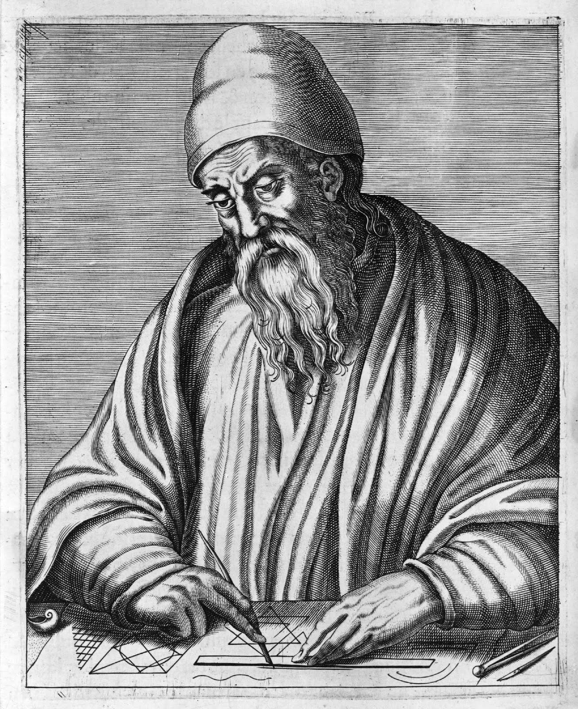
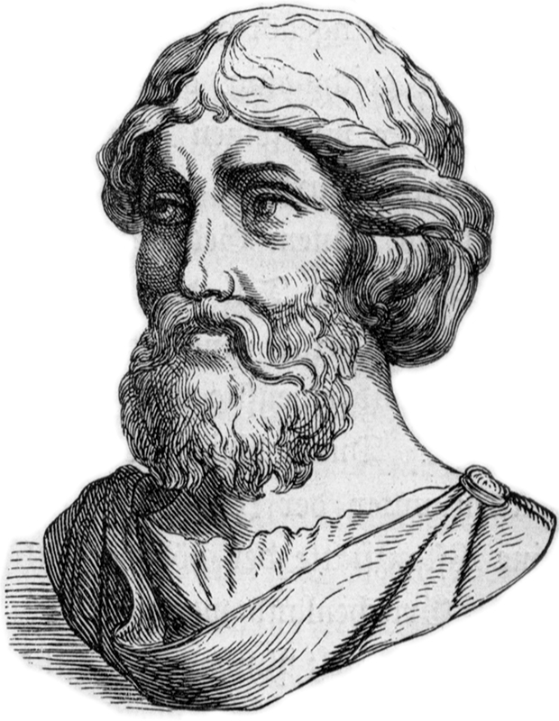
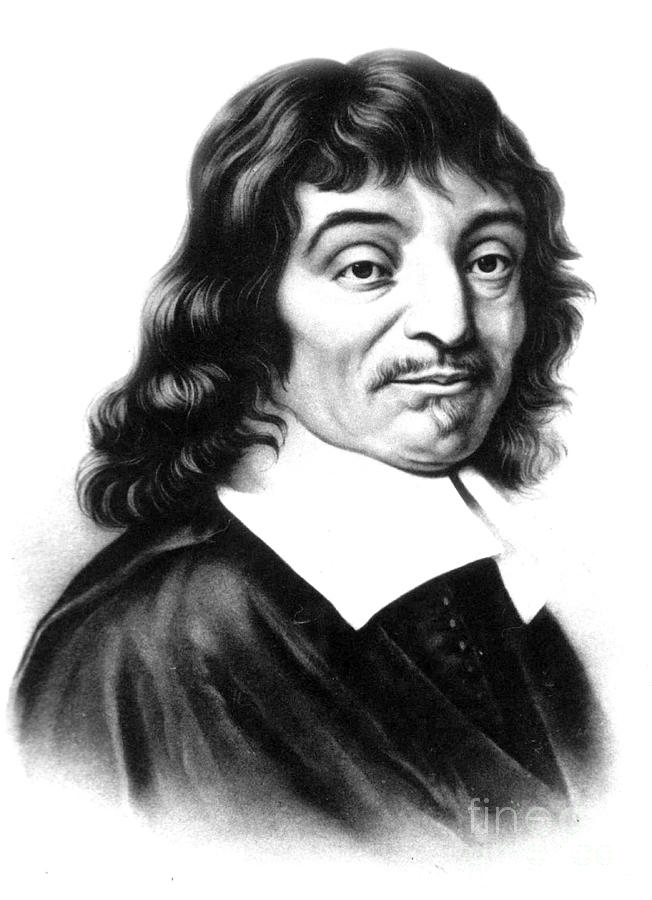

История
- XVII в. до н.э. - первое сочинение, содержащее простейшие геометрические сведения (Древний Египет).
- около 625 гг. до н.э. - III в. до н.э. - становление геометрии как математической науки.
- В знаменитом сочинении Евклида "Начала" были систематизированы основные известные геометрические сведения. Был развит аксиоматический подход к построению геометрии, который состоит в том, что сначала формулируются основные положения (аксиомы), а затем на их основе посредством рассуждений доказываются другие утверждения (теоремы).
- XVII в. н.э. - этап связан с накоплением знаний по алгебре. Выдающийся французский математик и философ Р.Декарт предложил новый подход к решению геометрических задач. Он ввел метод координат, связав геометрию и алгебру, что позволило решать многие геометрические задачи алгебраическими методами.



Таблица степеней
2
3
4
5
2
4
8
16
32
3
9
27
81
243
4
16
64
256
1024
5
25
125
625
3125